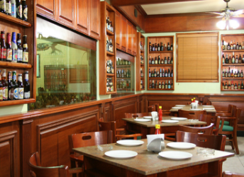
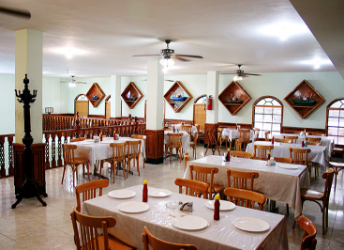
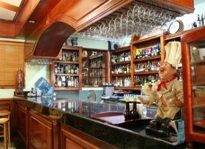
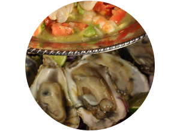
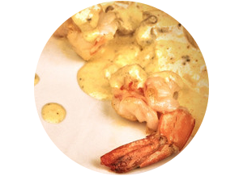
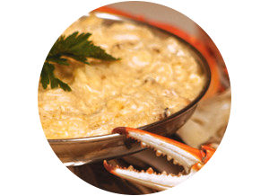
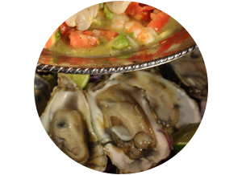
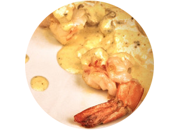
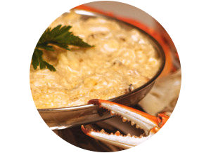

El 2 de noviembre de 1908 llegó Don Jesús García Santiago a las costas del puerto de Veracruz, arribando de su natal España. Debido a la situación política imperante en México por la revolución, decide viajar por toda la república. hasta que en 1916 se establece en Tampico, fundando así la tineda de abarrotes y ultramarinos "EL POVENIR".

 





A lo largo de más de 90 años hemos ido innovando y creando nuevos platillos que se han vuelto emblemáticos de nuestro bello puerto de Tampico.

3 GENERACIONES ESCRIBIENDO UNA HISTORIA DE
SABORES Y DELICADAS COMBINACIONES ®